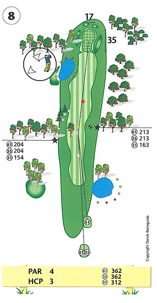
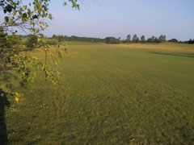
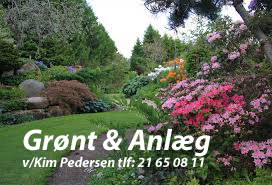

<div class="pages">
  <div data-page="hul8" class="page navbar-fixed toolbar-fixed" >
    <div class="navbar">
      <div class="navbar-inner">
        <div class="left">
          <a href="#" class="link back icon-only"><i class="icon icon-back"></i></a>
          <!-- <a href="#" class="back link icon-only"><i class="icon icon-back"></i></a> -->
        </div>
        <div class="center">Hul 8</div>
        <!-- <div class="right"></div> -->
        <div class="right">
        </div>
      </div>
    </div>
    <div class="page-content" style="padding-top:45px;">
       <div class="content-block">
          <center></center>
          <p>8. hul er andet par 4 hul i Perlerækken.</p>
          <center></center>
          <p>Udslaget skal være præcist og langt. Træer i begge sider af fairway 190 meter fra tee vil være stækt generende for andetslaget, hvis du havner bag dem. Drivet bør ligeledes carry bakketoppen, for ikke at miste længde ved at ramme ind i bakken og dermed give mindre overblik til andetslaget.</p>
          <p>Indspillet til den store green generes ikke af bunkere, men pas på den nye sø til venstre for fairway samt voldene rundt om green.</p>
          <p>En stærkt skrånende green fra bagkant til forkant gør indspillet nemmere, men greenens størrelse giver mulighed for putts på 30-40 meter, alt afhængig af flagplaceringen.</p>
          <p>For lav-handicapperen anbefales et langt drive for at tage ovenfor omtalte træer ud af spil og et indspil kort af pinden giver en noget større chance for birdie.</p>
          <p>Hulsponsor: <br />
          -LEDIGT-<br /><br />
          Bænksponsor:<br />
          Grønt & Anlæg ApS<br />
          
          </p>
        </div>
    </div>
    </div>
    </div>
  </div>
</div>
